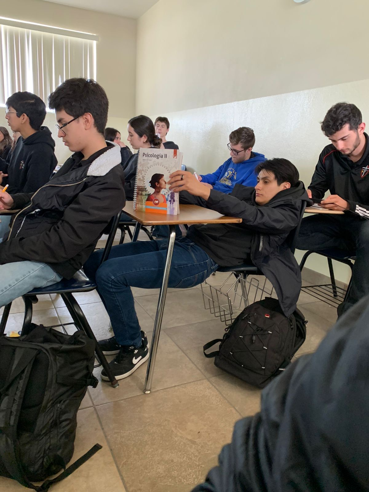
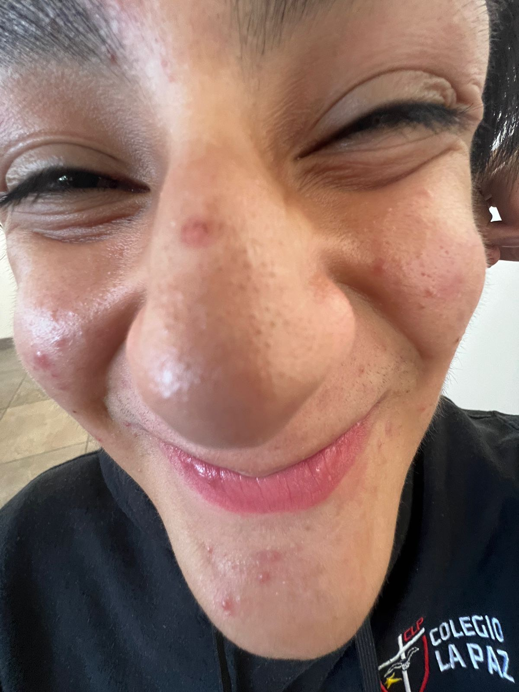
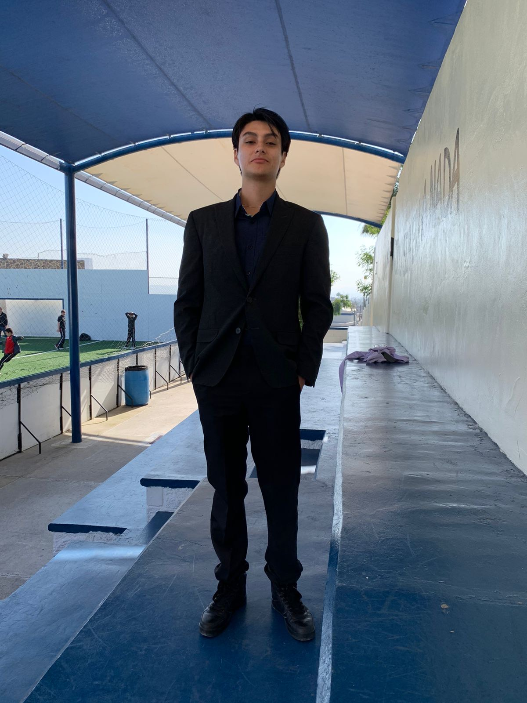

Julio Flores
AKA: Geney
Edad: 17
Rango: Gym Rat
Nivel de Poder: 99,000
Julio Flores emerge como uno de los distinguidos miembros de la asamblea del 602, ostentando una corpulencia que, aunque disimulada, palpita en su ser, en tanto sufre de una inseguridad de proporciones magnánimas, derivada de la exorbitante dimensión de sus músculos, equiparable a la de la céfala de Sebastián. Se susurra entre las sombras que su robustez es fruto de una inquebrantable addicion a los juegos de Supercell, impregnados de una avidez que Ángel le a impuesto a la fuerza, con sus artes oscuras, insufló en su mente sus adicciones, confiriéndole el título de lacayo y guardián personal. Ángel, con sus artes arcanas, desveló el potencial latente de Geney, sometiéndolo a modificaciones genéticas para sumergirlo en la esfera de los vicios, particularmente en los juegos del gusto del líder de la cofradía, destinándolo a servir como su fiel ciervo.
Julio, lamentablemente, ha exhibido un desempeño académico notablemente desafortunado en comparación con sus hazañas previas, encontrándose ahora en la medianía de la tabla, víctima de su mediocridad. Sin embargo, numerosas miradas señalan a Ángel como su principal influencia y mentor. Los seguidores especulan que el declive de Geney se atribuye a las manifestaciones de demencia que Ángel ha enfrentado, transitando de ser una pareja galáctica a distanciarse por años luz en la tabla y alejarse cada vez más en el ámbito social. Aunque con su carisma magnético y su dominio absoluto de la seducción, Julio Geney se erige como una figura legendaria en los anales del 602, un hombre cuya presencia ilumina cada rincón oscuro del aula del 602 con un resplandor propio de Geney.
Julio Geney, un personaje cuya soberbia es tan vasta como el horizonte mismo, se alza en medio del tumulto del 602 con una presencia imponente. Su amorío con algunos individuos de este círculo selecto es tan legendario como la auraa que emana de sus enormes musculos, atrayendo admiración y envidia por algunos de sus compañeros. Pero su pasión no se limita a los corazones de las féminas del aula del 602; los automóviles los cuales vuelven loco a Geney son símbolos de estatus y poder, ocupan un lugar privilegiado en la vida de nuestro musculoso amigo. Cada curva, cada motor rugiente, es motivo de fascinación y deleite para Julio.
 602